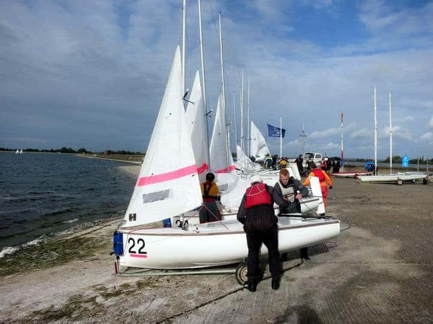

Competitive open O&CSS team racing in dinghies and keel boats remains a major focus of the Society. Younger members encourage, coordinate, and direct activities – and organise teams. If you want to participate in team racing, get in touch with the Secretary (link at bottom of sidebar). If you are interested in the history of team racing, you will find a good summary in the Wikipedia article on team racing[ext-link].
The Society participates in fixtures such as the Oxford Magnum, the Cam Cup, the National (UKTRA) Championship, and the Wilson Trophy. Be aware also of emerging inexpensive one-day team racing events and invited training sessions at Oxford and Cambridge. And remember the 2K initiative – a programme of international two-keel-boat team racing that Society member Bruce Hebbert helped to initiate.
The Society sponsors a Generations Event each year at Farmoor on a Saturday at the beginning of the Oxford Michaelmas Term. On the day, Oxford and Cambridge team from each decade, and across decades in extremis, battle it out in Fireflies. The racing uses a legendary and mysterious handicapping system that helps older teams and teams with six helms.
Anyone can enter a team by contacting the organiser[email-link]. Ladies teams are looked upon with especial favour, so let’s have some action ladies! The Generations event entry fee is modest and the briefing is normally at 9:30am. Breakfast and lunch are available at the Farmoor club and the O&CSS AGM and Dinner follow the event – in Oxford.

Firefly rigging taking place before the annual Generations Event at Farmoor